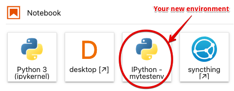

Environments#
We will take a deeper dive into the details of environments for reproducible computation. For the purposes of this discussion (the term environment has multiple uses), a conda environment is a directory containing a collection of packages you have installed and can use (full documentation is available here). Environments are accessed by name, and you can switch between environments by activating and deactivating them.
An environment can be built by hand, simply by installing packages into it. But by explicitly declaring in a file the packages that make an environment, the concept becomes key to reproducibility. That file can then be used to re-create the environment with the same list of packages (and potentially the same versions and even the exact same builds) on a different system.
Introduction#
As we start organizing code, we need to start thinking which tools do we need in order reproduce the results executed by some piece of code.
Is it enough to have someone else code in order to run the code and obtain the same results? The answer is no. In order to execute code, we need to know the version of the libraries we are using.
Note
Code always run in a given computational environment. When we run Python, we are running one version of Python that is installed somewhere in our machine. However, there are different Python installations you can execute, potentially different versions of it too. The same happens with libraries: executing code with different version numbers can lead to different result.
In order to specify the environment, we need to specify the dependencies of the code, that is, the list of tools and version the code requires to be executed.
In Python, the tool that organizes this is the package manager
When we do an import, a lot of things happen in our machine… retrieving the code some years ago was very complicated. How do we deal with complicated Python installations? The solution to this was Anaconda, which allows to install packages with more complicated dependencies, those that likely depend on other stuff (like C or Fortran code) that scientist need. For example, we need conda to install git and pandoc.
Note
This type of environment is associated with the conda tool linked above, but in practice we have two nearly equivalent commands we can use to manage them: conda and mamba. The latter is a newer implementation of the same ideas that has a number of performance advantages. While we will continue referring to “conda environments,” in practice we will use the mamba command for some tasks. In particular, we will always use mamba to install packages, as it can be much, much faster than conda.
On our hub, when running notebooks by default they use the kernel and packages associated with the notebook environment. When starting a new terminal, you may find yourself in the base environment that has no other packages, and may need to switch to the notebook environment if you want to access the same packages that you do from the notebook.
For the remaining of the course, you may need for some of your projects to install custom packages, and you will want to do that in a way that makes it possible for others (your teammates, instructors, etc) to have the same packages installed.
Storing your environments in a persistent location#
The first step to create new environments you can access later is to put them in a persistent location. You should create a folder for all your new environments, I recommend using:
mkdir $HOME/envs
so that from now on, all new environments you create will live in ~/envs. To tell conda that this is where you want to use your environments, create a file named .condarc in your home directory (or edit it if it’s there already)
envs_dirs:
- ~/envs
- ~/shared/envs
The second path, ~/shared/envs is there in case we (the instructors) create new environments for you in addition to the system default one.
Tip
You should add, if you don’t have it already, .condarc to your .dotfiles repository. If you did the .dotfiles installation, you already have it!
Creating a new environment#
Next, you will define the packages you want to install in your environment by using a file called environment.yml such as this one (you can find more details in the documentation):
name: mytestenv
dependencies:
- python=3.9
- tqdm=4.62.3
This file defines an environment with only Python 3.9 and the tqdm package installed in it. Once you have this file, you can create this environment with the command:
mamba env create -f environment.yml -p ~/envs/mytestenv
After it runs through the installation process, you should be able to see it listed along with the system-wide environments with the command mamba env list:
(base) (main)jupyter-fernando-2eperez[environments]> mamba env list
# conda environments:
#
mytestenv /home/jovyan/envs/mytestenv
base * /srv/conda
notebook /srv/conda/envs/notebook
You can now use it by typing conda activate mytestenv, and stop using it with conda deactivate.
Note
Note that we use conda and not mamba to activate/deactivate environments. This may change in the future.
Updating your environment with new packages#
While you can then install new packages in the environment at the command line by using mamba install <package-name>, you should always record which packages you mean to install in the environment.yml file so you can reproduce later the same environment or share it with colleagues.
For your homework projects, the environment.yml file should obviously go into the git repository, so that every team member (and your instructors) can also create the environment in the same fashion.
If you have new packages listed in your environment.yml file (because you edited it or changes were made to it by a colleague and you got these changes over git, for example), you can apply these updates with this command:
mamba env update --file environment.yml --prune
(the --prune option removes packages that may have been deleted from the file, if any, and is not strictly necessary though recommended to keep your environment in sync with the specification in the file).
Using an environment in your notebooks#
So far, our simple mytestenv environment can only be used at the command-line, but it will not be available for your notebooks. For that to work, you need to complete two additional steps.
First, you must install in this environment the ipykernel package. The following environment.yml file would give you a kernel you can use in the Hub (albeit with only the tqdm package, obviously):
name: mytestenv
dependencies:
- ipykernel=6.7.0
- python=3.9
- tqdm=4.62.3
Second, you need to let Jupyter know that you want to use this environment’s kernel, by installing the environment’s ipykernel into Jupyter:
python -m ipykernel install --user --name mytestenv --display-name "IPython - mytestenv"
In the above, the --name value is used internally by Jupyter and can be anything, while you should make the --display-name be descriptive, as that’s what is shown in the Launcher icons.
The above command will write a set of files into ~/.local/share/jupyter/kernels/mytestenv with the information about how to run the kernel, its logo, etc.
After completing these steps, when you click on the launcher in JupyterLab you should see something like the following:

You can now use these same techniques to manage as many environments as you need for your new projects.